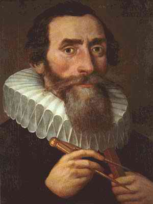

97 JOHANNES KEPLER 1571-1630
Peduli
setan dengan planit-planit! Peduli setan dia mau berputar,
merosot, tabrakan, terjungkal! Tetapi tidak "peduli setan"
buat Johannes Kepler yang lahir tahun 1571 di kota Weil der
Stadt, Jerman, penemu hukum pergerakan planit-planit.
Penemuan Kepler in cuma dua puluh delapan tahun sesudah
penerbitan buku De revolutionibus orbium coelestium, buku
besar yang di dalamnya memuat teori Copernicus bahwa
planit-planit berputar mengitari mentari dan bukannya
mengitari bumi. Kepler belajar di Universitas Tubingen,
peroleh gelar sarjana muda tahun 1588 dan gelar sarjana
penuh tiga tahun kemudian. Umumnya para ilmuwan saat itu
menolak teori "heliocentris" Copernicus; tetapi, ketika
Kepler di Tubingen dia dengar hipotesa heliocentris itu dan
memperincinya dengan kecerdasan tinggi, akhirnya dia
mempercayainya.
Sesudah meninggalkan Tubingen, Kepler menjadi mahaguru
selama beberapa tahun di akademi di kota Graz. Sambil
mengajar dia tulis buku pertamanya tentang astronomi (1596).
Kendati teori yang diajukan Kepler di buku itu ternyata
sepenuhnya meleset, buku itu dengan jernih menunjukkan
kemampuan matematika Kepler dan kemurnian pikirannya,
sehingga ahli astronomi besar Tycho Brahe mengundangnya jadi
asistennya di peneropong bintangnya di dekat Praha.
Kepler menerima undangan ini dan bergabung dengan Tycho
bulan Januari 1600. Tycho meninggal dunia tahun berikutnya,
tetapi Kepler sudah berhasil menyuguhkan kesan baik pada
bulan-bulan sebelumnya sehingga Kaisar Romawi Suci --Rudolph
II-- segera menunjuknya menggantikan Tycho selaku
matematikus kerajaan. Kepler menduduki posisi itu selama
sisa hidupnya.
Sebagai pengganti Tycho Brahe, Kepler mewarisi setumpuk
besar catatan hasil pengamatan cermat ihwal planit-planit
yang telah digarap Tycho bertahun-tahun. Karena Tycho
--astronom besar terakhir sebelum diketemukan teleskop--
juga pengamat yang hati-hati dan teliti yang pernah dikenal
dunia, catatan-catatan itu teramat besar harganya. Kepler
percaya bahwa catatan analisa matematika Tycho yang cermat
memungkinkannya menentukan kesimpulan bahwa teori gerakan
planit adalah benar: teori heliocentris Copernicus; teori
geocentris Ptolemy yang lebih lamaan; atau bahkan teori
ketiga yang dirumuskan Tycho sendiri. Tetapi, sesudah
bertahun-tahun melakukan sejumlah perhitungan yang cermat,
Kepler dengan rasa cemas menemukan bahwa pengamatan Tycho
tidaklah konsisten dengan teori-teori yang mana pun
juga!
Akhirnya Kepler menyadari bahwa masalahnya adalah: dia,
seperti juga Copernicus dan Tycho Brahe dan semua astronom
klasik telah menduga bahwa orbit keplanitan terdiri dari
lingkaran-lingkaran atau gabungan dari lingkaran-lingkaran.
Tetapi, kenyataan menunjukkan bahwa orbit keplanitan
tidaklah melingkar, melainkan agak oval, ellips.
Bahkan sesudah menemukan pemecahan pokok, Kepler masih
harus menghabiskan waktu berbulan-bulan membenamkan diri
dalam kerja hitung-menghitung yang rumit dan melelahkan
untuk meyakinkan bahwa teorinya memuaskan pengamatan Tycho.
Buku besarnya Astronomia Nova, diterbitkan tahun 1609,
menyuguhkan dia punya bagian pertama dari dua hukum
pergerakan planit. Hukum pertama menegaskan tiap planit
bergerak mengitari mentari dalam orbit oval atau ellips
dengan matahari pada satu fokus. Hukum kedua menegaskan
bahwa planit bergerak lebih cepat ketika berada lebih dekat
dengan matahari; kecepatan planit berbeda begitu rupa bahwa
garis yang menghubungkan planit dan matahari selama
perputaran, meliwati bidang yang sama luasnya dalam jangka
waktu yang sama. Sepuluh tahun kemudian Kepler mengeluarkan
hukum ketiganya: makin jauh jarak sebuah planit dari
matahari, makin perlu waktu lebih lama untuk menyelesaikan
perputarannya atau kwadrat kala perputaran planit-planit
berbanding lurus dengan pangkat tiga jarak rata-ratanya
dengan matahari.
Hukum Kepler, dengan menyuguhkan gambaran pokok yang
komplit dan tepat tentang gerak planit-planit mengitari
matahari, memecahkan masalah utama bidang astronomi, yang
bahkan oleh orang-orang genius seperti Copernicus dan
Galileo terliwatkan. Tentu saja, Kepler tidak menjelaskan
mengapa planit-planit bergerak pada orbitnya seperti itu;
masalah ini terpecahkan di abad berikutnya oleh Isaac
Newton. Tetapi, hukum Kepler merupakan pendahulu vital buat
sintesa besar Newton. ("Jika saya melihat lebih dulu dari
orang lain," begitu pernah Newton bilang, "ini akibat saya
berdiri di atas pundak-pundak para raksasa." Tak salah lagi,
Kepler adalah salah satu dari raksasa-raksasa itu yang
dimaksud Newton).
Sumbangan Kepler kepada astronomi hampir bisa
disejajarkan dengan Copernicus. Dan sesungguhnya, dalam
beberapa hal hasil karya Kepler bahkan lebih mengesankan.
Dia lebih orisinal,, dan kesulitan matematika yang
dihadapinya bagaikan menggunung. Teknik matematika pada saat
itu tidaklah sesempurna perkembangannya seperti halnya kini,
dan saat itu tak ada mesin kalkulator yang menolong Kepler
dalam tugas penghitungan-penghitungannya.
Ditinjau dari sudut arti penting karya Kepler, adalah
mengherankan bilamana pada mulanya hampir tidak digubris
orang, bahkan oleh seorang ilmuwan besar seperti Galileo.
(Galileo tak ambil perhatian hukum Kepler sungguh
mencengangkan karena kedua orang itu saling berkorespondensi
satu sama lain, dan juga karena hasil karya Kepler dapat
menolong menguji teori Ptolemy). Tetapi bila yang
lain-lainnya agak lambat menghargai ketinggian hasil karya
Kepler, ini dapat difahami oleh Kepler sendiri.
Dalam nada letupan kegembiraan Kepler menulis "... Buku
telah kutulis! Telah kupersembahkan sesuatu anugerah
kesenangan yang suci. Dia akan dibaca baik oleh orang
sejamanku atau oleh generasi sesudahku. Aku tidak peduli.
Bisa jadi buku itu harus menunggu 100 tahun untuk menjumpai
seorang pembaca, seperti halnya Tuhan menunggu 6000 tahun
seseorang yang bisa memahami kebesaran karyanya."
Meskipun angsur-berangsur, sesudah melampaui beberapa
dekade, arti penting hukum Kepler menjadi jelas buat dunia
ilmu pengetahuan. Pada abad berikutnya pendapat-pendapat
yang memihak teori Newton berkata bahwa hukum Kepler
disimpulkan dari teori-teori itu. Pendapat sebaliknya
mengatakan, hukum gerak Newton, hukum gaya berat Newton
disimpulkan dari hukum Kepler. Tetapi, untuk berbuat
demikian memerlukan teknik itu, Kepler, cukup mudah
menangkap permasalahannya dan mengajukan pendapat bahwa
gerakan planit dikontrol oleh tenaga yang datang dari
matahari.
Sebagai tambahan hukum gerakan planit-planit, Kepler
menyumbangkan berbagai ihwal kecil di bidang astronomi. Dia
juga membuat sumbangan penting mengenai teori optik. Di
akhir-akhir umurnya --sayang sekali-- dia diganggu oleh
masalah pribadi. Jerman merosot jadi kacau karena "Perang
tiga puluh tahun" dan jarang orang yang bisa lolos dari
kesulitan-kesulitan serius.
Salah satu masalah adalah soal nafkah. Kekaisaran Romawi
Suci lambat dalam pembayaran gajinya, walau dalam keadaan
yang tidak gawat. Dalam keadaan perang yang kacau-balau,
gaji Kepler ditunggak terus. Karena Kepler kawin dua kali
dan punya dua belas anak, kesulitan duit ini betul-betul
berat. Masalah lain menyangkut bundanya yang di tahun 1620
ditahan dengan tuduhan jadi "dukun sihir." Kepler banyak
buang waktu hingga akhirnya sang ibu bisa dibebaskan tanpa
mengalami siksaan.
Kepler meninggal dunia tahun 1630 di Regensburg, Bavaria.
Dalam masa "Perang tiga puluh tahun" yang mengganas itu,
kuburnya diobrak-abrik. Tetapi, hukum gerakan planitnya
terbukti lebih menjadi kenangan yang lestari dari sekadar
sepotong batu nisan.
Situs web
- http://galileo.rice.edu/sci/kepler.html
- http://www-groups.dcs.st-and.ac.uk/~history/Mathematicians/Kepler.html
- http://www-history.mcs.st-andrews.ac.uk/history/PictDisplay/Kepler.html
|